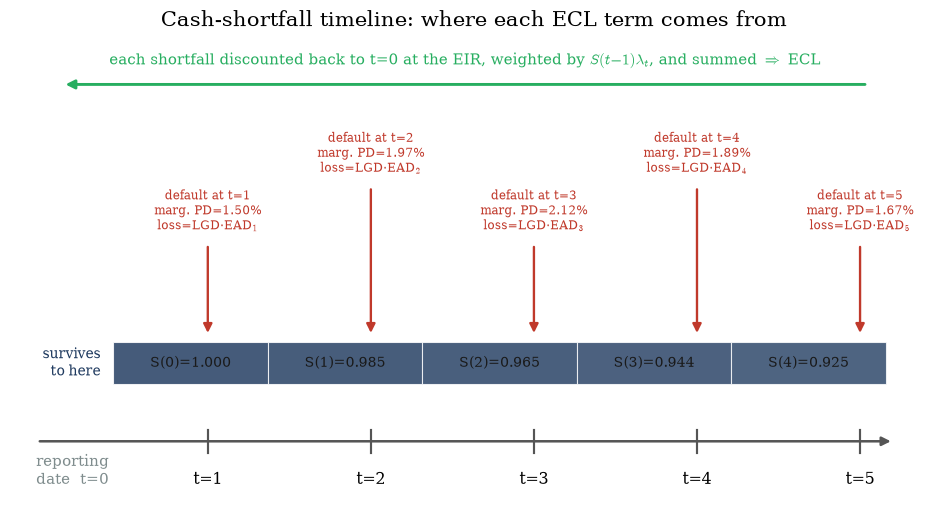
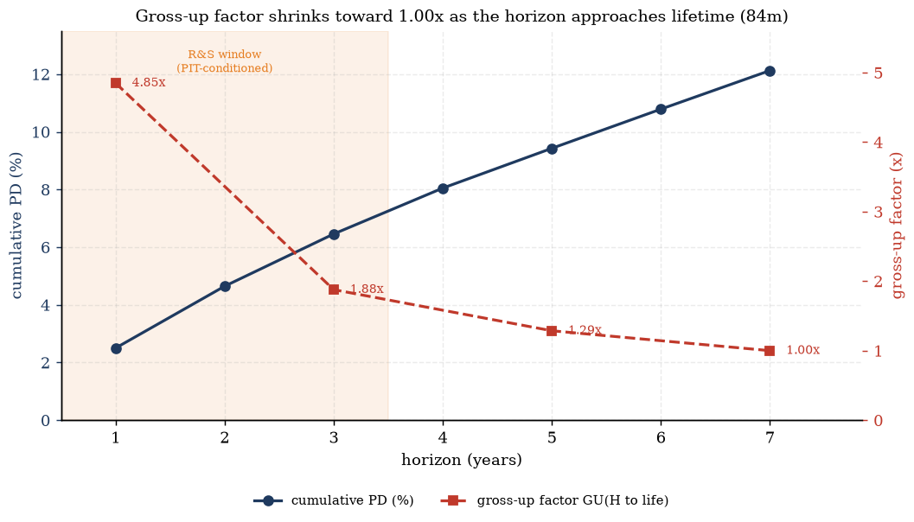
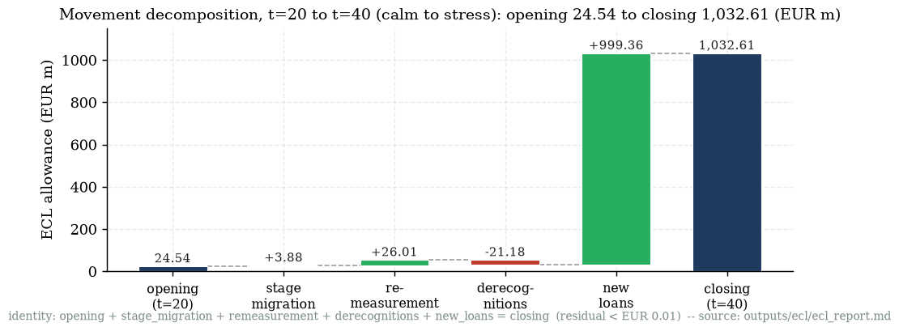
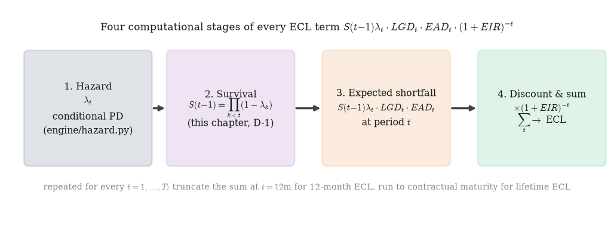

This chapter answers the question every other chapter's outputs feed into: given a curve of default
hazards, a loss-given-default rate, an exposure profile, and a discount rate, how does IFRS 9 turn
those four ingredients into a single provision number? We derive the ECL decomposition theorem from
first principles (not just state it), walk the flagship five-year worked example one number at a time,
resolve the 12-month/lifetime boundary and the gross-up trick banks use to extend short-horizon models to
lifetime, reconcile a real period-over-period allowance movement down to the cent, and close with the
EAD/survival double-counting rule that a surprising fraction of production ECL engines get wrong. Source
anchor: knowledge/sources/ifrs9_credit_risk_notes.md §3 (2.1–2.3)
and §9.4 (2.4); project evidence from outputs/ecl/ecl_report.md
(2.5) and outputs/ead/ead_report.md / wiki/pages/ead-model.md
(2.6).
2.1 From cash shortfall to the ECL formula
Start from what actually happens to money, not from the formula. A performing loan is expected to
repay in full according to its contract. If the borrower defaults at some future date, the lender does
not receive the contractual cash flow in full — it receives whatever is recovered instead. The
shortfall is the gap between what was contractually owed and what is actually recovered, and ECL
is nothing more than the probability-weighted, discounted value of every shortfall that might occur over
the loan's life.
Definitions (every symbol used from here on).
$t=1,\dots,T$ — discrete time periods over the loan's remaining contractual life $T$
(years in the textbook's worked example; quarters in this project's DCR engine — the theorem is agnostic
to period length, see the note below).
$\lambda_t$ — the hazard (conditional default probability): $\lambda_t=P(T_{\text{default}}=t\mid T_{\text{default}}\ge t)$,
the probability of defaulting in period $t$ given the loan has survived to the start of period $t$.
$S(t)$ — the survival function: $S(t)=P(T_{\text{default}}>t)$, the probability the loan
is still performing at the end of period $t$. By convention $S(0)=1$ (certain to be alive at the reporting date).
$LGD_t$ — loss given default: the fraction of exposure not recovered, conditional on default occurring in period $t$.
$EAD_t$ — exposure at default: the balance at risk if default occurs in period $t$.
$EIR$ — the loan's original effective interest rate (fixed at origination) — IFRS 9
requires discounting at this rate, never a current market rate or WACC (§3, §10.1).
Derivation — from a single shortfall to the ECL sum.
1. Suppose default happens in exactly period $t$ (not before, not after). The cash shortfall
crystallising at that moment is the unrecovered fraction of the exposure at risk: $\text{shortfall}_t = LGD_t\cdot EAD_t$.
This is a conditional statement — it is the loss given that default lands in period $t$.
2. "Default lands in exactly period $t$" is not the same event as "default has happened by time
$t$". The probability that default lands in exactly period $t$ — the marginal default
probability — is the probability of surviving to the start of period $t$, times the
conditional probability of defaulting in that period: $P(T_{\text{default}}=t) = S(t-1)\cdot\lambda_t$.
(Formal justification for the survival term is §2.2, D-1.)
3. The expected shortfall attributable to period $t$, viewed from today, is the
shortfall size times the probability it occurs: $\mathbb{E}[\text{shortfall}_t] = S(t-1)\,\lambda_t\cdot LGD_t\cdot EAD_t$.
This is a cash flow expected to land $t$ periods in the future, in expectation — it still needs to be
brought back to a present value.
4. IFRS 9 fixes the discount rate as the loan's original EIR (not a market or risk-free rate) —
the same rate the loan's own interest income is being recognised at, so that expected credit losses are
measured on a basis consistent with the asset's carrying amount. The discount factor for a shortfall
landing at period $t$ is $DF(t)=(1+EIR)^{-t}$.
5. Every period's expected, discounted shortfall is an independent contribution to today's
provision (the events "default in period 1", "default in period 2", … are mutually exclusive — a loan
can only default once). Summing every period's contribution over the full remaining life gives the ECL
decomposition theorem:
Theorem — the ECL decomposition (knowledge/sources/ifrs9_credit_risk_notes.md §3).
$$ \mathrm{ECL} \;=\; \sum_{t=1}^{T} \underbrace{S(t-1)\,\lambda_t}_{\text{marginal PD}_t} \cdot LGD_t \cdot EAD_t \cdot (1+EIR)^{-t}, $$
with 12-month ECL the same sum truncated at $t=12$ months (Stage 1 loans), and
lifetime ECL the sum run to the full remaining contractual life $T$ (Stage 2/3 loans,
Chapter 1 §A2). Three related PD concepts, disambiguated: conditional/hazard PD
$\lambda_t$ (default in $t$ given survival to $t-1$); marginal PD $S(t-1)\lambda_t$
(unconditional probability default lands exactly in period $t$); cumulative PD $F(t)=1-S(t)$
(probability default has happened by any point up to $t$).
Periodicity is a modelling choice, not part of the theorem. The textbook's flagship example
(§2.3) runs $t$ in whole years with an annual $EIR$. This project's production engine
(engine/ecl.py) runs $t$ in quarters and writes the same theorem as
$\mathrm{ECL}=\sum_t S(t-1)\lambda_t\, LGD_t\, EAD_t\,(1+EIR_q)^{-t}$ (wiki/pages/ecl-engine.md),
where $EIR_q$ is the loan's note rate compounded to a quarterly rate ($EIR_q=\text{note_rate}/400$,
matching the divisor already used to build the EAD annuity — outputs/ecl/ecl_report.md). The
algebra is identical either way; only the meaning of one unit of $t$ changes.
What this means. Every term of the ECL sum answers one question: "what is the expected,
time-discounted cost of the loan defaulting in this specific period?" Nothing in the formula is
exotic — it is a textbook expected-value calculation (probability × loss size) applied period by
period, then discounted and summed. Everything the rest of this study-notes compendium builds — hazard
models (Ch.3), LGD models (Ch.4), EAD models (Ch.4), PIT/TTC conditioning (Ch.5), scenario weighting
(Ch.6) — exists to produce better estimates of the three curves $\lambda_t$, $LGD_t$, $EAD_t$ that feed
this one sum.
Gotcha — marginal PD, not cumulative PD, belongs in the sum. A common mis-derivation writes
$\mathrm{ECL}=\sum_t F(t)\cdot LGD_t\cdot EAD_t\cdot DF(t)$ using the cumulative PD $F(t)$ instead
of the marginal PD $S(t-1)\lambda_t$. This overstates ECL, because $F(t)$ already includes every default
that could have happened in periods $1,\ldots,t-1$ — using it at every $t$ effectively counts those
earlier defaults' losses again at every later period. Only the marginal PD isolates "the loss that
crystallises if and only if default happens in exactly this period," which is what actually
happens to the loan's cash flows. See §2.2 for the survival-product identity that keeps the marginal
terms disjoint and summing correctly to $F(T)$.
Check yourself.
Why does IFRS 9 discount at the loan's original EIR rather than at a current market rate?
Answer
Discounting at the original EIR keeps ECL measurement consistent with how the
asset's interest income and amortised cost carrying value are already being recognised — using a
current market rate would make the provision inconsistent with the balance the provision is meant to
offset, and would let ECL move with interest-rate changes that have nothing to do with credit risk.
What event does the marginal probability $S(t-1)\lambda_t$ actually represent, in words?
Answer
"The loan survives (does not default) through periods $1,\ldots,t-1$, AND then
defaults in period $t$." It is the probability of the compound, mutually-exclusive event "default lands
in exactly period $t$" — not "default has happened by period $t$" (that is the cumulative PD $F(t)$).
If you summed $F(t)$ (cumulative PD) instead of $S(t-1)\lambda_t$ (marginal PD) across all $t=1,\ldots,T$
in the ECL formula, would the result be too high, too low, or unaffected? Why?
Answer
Too high (overstated). $F(t)$ is non-decreasing and re-includes every prior period's
default probability at every subsequent $t$, so the same underlying default event contributes to
multiple terms of the sum instead of exactly one. Only the marginal PDs partition the probability space
disjointly across $t=1,\ldots,T$ (plus the residual "survives to $T$" probability $S(T)$).
2.2 The survival function: deriving S(t) from the hazard chain
The theorem box in §2.1 defines $S(t)=\prod_{k\le t}(1-\lambda_k)$ but does not derive it — the
source notes assert it. Here is the missing step (derivation backlog item D-1).
Derivation — survival is a product of one-period conditional non-default probabilities.
1. By definition, $S(t) = P(T_{\text{default}}>t)$, the
probability of not having defaulted by the end of period $t$.
2. Write "survive to $t$" as the intersection of $t$
one-period survival events: $\{T_{\text{default}}>t\} = \{T_{\text{default}}>1\}\cap
\{T_{\text{default}}>2\mid T_{\text{default}}>1\}\cap\cdots\cap\{T_{\text{default}}>t\mid T_{\text{default}}>t-1\}$
— surviving to $t$ requires surviving period 1, then surviving period 2 given you survived period
1, and so on. This is always a valid decomposition of any joint event into a chain of conditionals (the
chain rule of probability), regardless of any independence assumption.
3. By the chain rule, $P(T_{\text{default}}>t) =
\prod_{k=1}^{t} P(T_{\text{default}}>k \mid T_{\text{default}}>k-1)$.
4. Each factor is a one-period conditional survival
probability: $P(T_{\text{default}}>k\mid T_{\text{default}}>k-1) = 1-P(T_{\text{default}}=k\mid
T_{\text{default}}\ge k) = 1-\lambda_k$, by the definition of the hazard $\lambda_k$ in §2.1.
5. Substituting: $S(t) = \prod_{k=1}^{t}(1-\lambda_k)$,
and by the same argument $S(t-1)=\prod_{k=1}^{t-1}(1-\lambda_k)$ — the survival term that appears in the
ECL sum's marginal-PD factor.
Worked check — the flagship loan's hazard path. Using the same annual hazards as the §2.3
worked example ($\lambda=1.50\%,2.00\%,2.20\%,2.00\%,1.80\%$ for $t=1,\ldots,5$,
tests/fixtures/compute_ecl.py, array HAZARDS), the survival-product identity
gives:
$t$
$S(t)=\prod_{k\le t}(1-\lambda_k)$
computed as
0
1.00000
(by convention)
1
0.98500
$1-0.0150$
2
0.96530
$0.98500\times(1-0.0200)$
3
0.94406
$0.96530\times(1-0.0220)$
4
0.92518
$0.94406\times(1-0.0200)$
5
0.90853
$0.92518\times(1-0.0180)$
So $1-S(5) = 0.09147 = 9.15\%$ — matching compute_ecl.py's
cumulative_pd_5y_pct golden value 9.15% exactly (derived independently here
via the survival identity; script: this chapter's derive_ecl.py, run against the golden
fixture inputs). $S(0),\ldots,S(4)$ above are exactly compute_ecl.py's
survival_start_year_1–survival_start_year_5 (the $S(t-1)$ column of §2.3's table).
What this means. The survival product is not an approximation or a modelling convenience — it
follows mechanically from the chain rule of probability applied to the definition of the hazard. No
independence assumption between periods is required (the chain rule holds for any joint distribution);
what is assumed is that $\lambda_k$ as fitted (Chapter 3) already correctly conditions on
survival to $k$ — i.e. it is estimated on the "at-risk" population at each period, which is exactly how
discrete-time hazard models are fitted in practice.
Gotcha — $S(t)$ decays multiplicatively, not by subtracting hazards. A frequent error is computing
survival as $1-\sum_{k\le t}\lambda_k$ (subtracting hazards) instead of $\prod_{k\le t}(1-\lambda_k)$
(multiplying survival factors). The two agree only to first order for small $\lambda_k$ — e.g. at
$t=5$ the sum-of-hazards approximation gives $1-(0.0150+0.0200+0.0220+0.0200+0.0180)=0.9050$, close to
but not equal to the correct $S(5)=0.90853$ (a 0.35pp gap here; the gap widens as hazards grow, and can
become material over long lifetime horizons or in stressed scenarios with double-digit annual hazards).
Check yourself.
Does the survival-product derivation require default events in different periods to be
statistically independent?
Answer
No. The chain rule of probability, $P(A\cap B)=P(A)P(B\mid A)$, holds for any joint
distribution regardless of independence — it is exactly what conditioning "given survival to $k-1$"
already captures. The derivation only relies on $\lambda_k$ being defined as a conditional
probability (conditional on survival to the start of period $k$).
Given hazards $\lambda_1=5\%,\lambda_2=8\%$, compute $S(2)$ and compare it to the naive
$1-(\lambda_1+\lambda_2)$ approximation.
Answer
$S(2)=(1-0.05)\times(1-0.08)=0.95\times0.92=0.874$. The naive sum gives
$1-(0.05+0.08)=0.87$ — close (0.4pp gap) but not exact; the multiplicative form is the derived, correct
identity.
Why is $S(t-1)$ — not $S(t)$ — the survival term multiplying $\lambda_t$ in the marginal PD?
Answer
$\lambda_t$ is already conditional on survival to the start of period $t$,
i.e. to the end of period $t-1$. Multiplying by $S(t-1)$ (survival through period $t-1$) converts that
conditional probability into the unconditional ("from today") probability of defaulting exactly in
period $t$; multiplying by $S(t)$ would double-apply period $t$'s own survival.

Exhibit 2.1 — The cash-shortfall timeline: at each period $t$, a shortfall of
$LGD_t\cdot EAD_t$ can crystallise with marginal probability $S(t-1)\lambda_t$; every such shortfall is
discounted back to the reporting date and summed to ECL (survival values and marginal PDs from
tests/fixtures/compute_ecl.py, regenerated in matplotlib).
2.3 Flagship worked example: the 5-year amortising loan, digit by digit
The source notes' worked example (§3): a 5-year amortising loan, principal EUR 1,000,000
repaid in five equal EUR 200,000 year-end instalments, effective interest rate $EIR=6\%$, constant
$LGD=35\%$, default losses crystallising at year-end, with hazards following a mild retail "seasoning
hump" ($\lambda=1.5\%,2.0\%,2.2\%,2.0\%,1.8\%$ for $t=1,\ldots,5$). Every number below is
tests/fixtures/compute_ecl.py's RESULTS, printed by running the fixture module
directly (derivation backlog item D-2) — nothing here is hand-typed.
Worked example — every term of the ECL sum. $EAD_t$ is the balance after $t-1$
repayments have been made (the exposure at risk entering year $t$, before that year's own repayment):
$EAD_1=1{,}000{,}000$, $EAD_2=800{,}000$, …, $EAD_5=200{,}000$. Discount factor
$DF_t=(1.06)^{-t}$.
$t$
$\lambda_t$
$S(t-1)$
marginal PD $=S(t-1)\lambda_t$
$EAD_t$ (EUR)
$DF_t=(1.06)^{-t}$
contribution (EUR)
running sum (EUR)
1
1.50%
1.00000
0.01500
1,000,000
0.9434
4,952.83
4,952.83
2
2.00%
0.98500
0.01970
800,000
0.8900
4,909.22
9,862.05
3
2.20%
0.96530
0.02124
600,000
0.8396
3,744.44
13,606.49
4
2.00%
0.94406
0.01888
400,000
0.7921
2,093.80
15,700.29
5
1.80%
0.92518
0.01665
200,000
0.7473
871.10
16,571.39
Each year-$t$ contribution is marginal_pd × $LGD(35\%)$ × $EAD_t$ × $DF_t$
— e.g. year 1: $0.01500\times0.35\times1{,}000{,}000\times0.9434=4{,}952.83$. Sanity check on the sum:
$4{,}952.83+4{,}909.22+3{,}744.44+2{,}093.80+871.10=16{,}571.39$ (re-added independently in
derive_ecl.py, matching to the last displayed cent).
12-month ECL = the $t=1$ term only = EUR 4,952.83
(ecl_12m_eur).
Lifetime ECL = the full running sum = EUR 16,571.39
(ecl_lifetime_eur).
Lifetime / 12m ratio = $16{,}571.39/4{,}952.83=$ 3.35×
(lifetime_over_12m_ratio) — the source notes' "a 3.35× jump on Stage 2 transfer."
Exhibit 2.2 — Annual ECL contributions (bars, left axis) and the cumulative running
sum (line, right axis) for the flagship 5-year loan; the shaded bar is the 12-month ECL window
(tests/fixtures/compute_ecl.py, regenerated in matplotlib).
What this means. Notice the EUR contribution is largest in year 1 and falls in every
subsequent year (4,952.83 → 4,909.22 → 3,744.44 → 2,093.80 → 871.10) — even though the
underlying marginal PD itself keeps rising for one year longer, peaking in year 3 at 2.124%
(1.500%→1.970%→2.124%→1.888%→1.665%). The two curves tell different stories because the
EUR contribution is a product of the marginal PD with $EAD_t$ and $DF_t$, and both of the latter
are falling every single year: $EAD_t$ by a fixed EUR 200,000 (a −20% relative cut from year 1
to 2, widening to −50% from year 4 to 5), and $DF_t$ by the constant factor $1/1.06$ ($\approx-5.7\%$
per year). From year 1 to year 2 alone, marginal PD rises 31.3% (0.01500→0.01970) but
$EAD_t\times DF_t$ falls 24.5% (0.8×0.94340), so the product already declines (by 0.88%) despite the
still-rising default probability — and from year 3 onward every driver is falling together, so the
EUR figure drops off steeply. This is the generic shape of a retail term-loan ECL profile: largest near
origination, when the full balance is least amortised and least discounted, declining thereafter as
exposure and discounting overwhelm the seasoning hump in the per-period default probability. The
3.35× lifetime/12m ratio is exactly why a loan's transfer from Stage 1 to Stage 2
(Chapter 1) is a step-change in the balance-sheet provision, not a gradual one — SICR does not
increase $\lambda_t$ itself, it only changes which years' terms enter the sum.
Gotcha — the falling $EAD_t$ schedule is amortisation, not prepayment. In this flagship example
$EAD_t$ falls because the loan is contractually amortising (EUR 200,000 scheduled repayment per
year) — it is not a prepayment adjustment. Confusing scheduled amortisation with prepayment-scaled
EAD is exactly the double-counting trap covered in §2.6: the survival term $S(t-1)$ here only carries
default risk (this example has no competing prepayment hazard), so $EAD_t$ correctly stays on its
contractual path.
Check yourself.
The annual EUR ECL contribution is largest in year 1 and falls every year after that, yet the marginal
PD $S(t-1)\lambda_t$ itself keeps rising until year 3. How can both be true at once?
Answer
Because the EUR contribution is the product of the marginal PD with $EAD_t$
and $DF_t$, and those two factors are already falling fast enough to outweigh the marginal PD's rise from
the very first year: $EAD_t$ drops by a fixed EUR 200,000/year (−20% relative from year 1 to
2) and $DF_t$ shrinks by the constant factor $1/1.06$ (−5.7%/year), a combined −24.5% pull
against only a +31.3% rise in the marginal PD — so the product already declines from year 1 to year 2,
and keeps declining every year after, even in year 2 where the marginal PD is still rising.
If this loan were reclassified to Stage 2 the day after origination, what would the reported ECL jump to, and by what multiple over the 12-month figure?
Answer
EUR 16,571.39 (the full lifetime sum), a 3.35× jump over the
EUR 4,952.83 12-month figure — precisely the lifetime_over_12m_ratio golden value.
Recompute the year-3 discount factor $DF_3$ from the stated $EIR=6\%$ and confirm it matches the table.
Answer
$DF_3=(1.06)^{-3}=1/1.191016=0.8396$, matching the table exactly.
2.4 12-month vs lifetime ECL, and the gross-up factor
§2.3 truncated the same sum at two different horizons ($t=1$ vs $t=1,\ldots,5$) because both the
hazard curve and the exposure profile were fully known out to five years. In practice a bank often trusts
its point-in-time (PIT) conditioned hazard curve only over a shorter reasonable-and-
supportable (R&S) window — commonly 2–3 years — beyond which macro forecasts are not
credible, and reverts the hazard to a long-run through-the-cycle (TTC) level for the remainder of the
contractual life (§9.4). The gross-up factor is how a short-horizon PD/ECL estimate is
scaled up to a lifetime figure without re-running the full term structure by hand.
Definition — the gross-up factor (§9.4). When a model is trusted only to horizon $H$ but
lifetime is longer, $$ GU(H\to\text{life}) = \frac{\text{cumulative PD to maturity}}{\text{cumulative PD to } H}, \qquad \mathrm{ECL}_{\text{life}} \approx GU\cdot \mathrm{ECL}_H. $$
Worked example — grossing up a 7-year loan (derivation backlog item D-11,
tests/fixtures/compute_grossup.py). A 7-year loan's hazard is PIT-elevated for the first
three years (the R&S window, decaying $2.50\%\to2.20\%\to1.90\%$), reverts through a single
mid-point year at $1.70\%$, then holds flat at the $1.50\%$ TTC level to maturity — the full 7-year
annual hazard path recovered from the notes' printed cumulative-PD table is
[2.50%, 2.20%, 1.90%, 1.70%, 1.50%, 1.50%, 1.50%]. ECL here is simplified to
$\text{cumPD}(H)\times LGD\times EAD$ (undiscounted, isolating the horizon effect; $EAD=100$, $LGD=30\%$).
Horizon $H$
Cumulative PD to $H$
Gross-up $GU(H\to\text{life})$
ECL($H$)
12 months
2.50%
4.85×
0.75
36 months (R&S)
6.46%
1.88×
1.94
60 months (reliable)
9.43%
1.29×
2.83
Lifetime (84 months)
12.12%
1.00×
3.64
Every cumulative PD is $\text{CPD}(n)=1-\prod_{k\le n}(1-h_k)$ (the same survival identity as §2.2,
applied year by year to this loan's hazard path) — e.g. $\text{CPD}(3)=1-(1-0.025)(1-0.022)(1-0.019) =
6.46\%$. Recall the definition $GU(H\to\text{life})=\text{CPD(life)}/\text{CPD}(H)$: at $H=12$m,
$GU=12.12\%/2.50\%=4.85\times$; at $H=60$m, $GU=12.12\%/9.43\%=1.29\times$ — matching the table (all four
values reproduced exactly from compute_grossup.py's RESULTS).

Exhibit 2.3 — Cumulative PD rises monotonically toward lifetime while the
gross-up factor shrinks toward 1.00× as the horizon $H$ approaches the 84-month lifetime
(tests/fixtures/compute_grossup.py, regenerated in matplotlib).
What this means. The gross-up factor is largest exactly where it matters most operationally — a
bank holding only a 12-month PIT PD model (common in retail Basel-IRB shops repurposing IRB infrastructure
for IFRS 9, Chapter 1 §A4) needs a $4.85\times$ multiplier to reach a defensible lifetime
figure from that one number. As $H$ approaches the true lifetime, $GU\to1.00\times$ by construction (the
numerator and denominator converge). The chart's monotonic cumulative-PD curve also makes visible why the
R&S window boundary (shaded) matters: everything to its right is TTC-flat-hazard extrapolation, not
macro-conditioned forecast — the credibility of the tail figure rests entirely on the TTC reversion
assumption, not on any forward-looking scenario information.
Gotcha — a single gross-up factor assumes the calibration vintages' default-timing shape holds beyond
$H$. This breaks for back-loaded products (balloon or interest-only structures, where losses cluster
late in the life) or where the tail sits in a different macro regime than the vintages the factor was
calibrated on. The source notes' own caution (§9.4): segment the factor by product/vintage where
data allows, and prefer an explicit TTC-extended term structure (as built here) over a single blanket
multiplier whenever the underlying hazard path is available.
Check yourself.
Why does $GU(H\to\text{life})$ always equal exactly $1.00\times$ when $H$ equals the lifetime itself?
Answer
By definition $GU(H\to\text{life})=\text{CPD(life)}/\text{CPD}(H)$; when $H=$life
the numerator and denominator are the same quantity, so the ratio is identically 1.
A bank has only a 12-month PIT PD of 2.5% for a loan whose true lifetime cumulative PD works out to
12.12%. Using the gross-up approach, what lifetime PD would it estimate, and how does it compare to the
true figure?
Answer
$GU(12\text{m}\to\text{life})=4.85\times$, so estimated lifetime PD
$\approx 2.5\%\times4.85=12.13\%$ — matching the true 12.12% cumulative PD to within rounding, because
the gross-up factor in this worked example was itself derived from the same hazard path (a
self-consistency check, not an independent validation of the method).
Name one type of loan for which a single, portfolio-wide gross-up factor would be a poor
approximation, and explain why.
Answer
A balloon or interest-only loan — its default timing is back-loaded (concentrated
near the balloon/maturity date) relative to a typical amortising loan's default-timing shape, so a
gross-up factor calibrated on amortising vintages would understate its true lifetime tail risk.
2.5 The movement waterfall: opening → closing
ECL is not just a point-in-time number — banks report how the allowance moved from one period
to the next, decomposed into named drivers (IFRS 7 disclosure requirement, Chapter 13). This
project's ECL engine (engine/ecl.py) computes exactly such a movement between two real DCR
book snapshots: t=20 (a calm quarter) and t=40 (a stressed quarter),
sourced from outputs/ecl/ecl_report.md.
Definition — the five-component movement decomposition (outputs/ecl/ecl_report.md).
Sequential and order-dependent: (1) stage migration — surviving loans re-marked at their
new stage but frozen $t{=}20$ marks; (2) remeasurement — the same migrated loans,
re-marked at $t{=}40$'s actual PD/LGD/EAD; (3) derecognitions — loans present at $t{=}20$
but no longer in the book at $t{=}40$, removed at their opening marks; (4) new loans —
loans present at $t{=}40$ only, entered at their closing marks. A different component ordering would
allocate the migration×remeasurement interaction differently — this is a stated modelling choice,
not a unique decomposition.
Worked example — the real t=20→t=40 waterfall (outputs/ecl/ecl_report.md,
"Movement decomposition" table; all figures in USD millions, the DCR book's reporting currency).
Component
\$m
Loans
Running total (\$m)
Opening (t=20)
+24.54
8,662
24.54
Stage migration
+3.88
498
28.42
Remeasurement
+26.01
1,948
54.43
Derecognitions
−21.18
6,714
33.25
New loans
+999.36
11,915
1,032.61
Closing (t=40)
1,032.61
13,863
1,032.61
Identity check: $24.54+3.88+26.01-21.18+999.36 = 1{,}032.61$, matching closing exactly —
outputs/ecl/ecl_report.md's own gate reports the identity residual at <
\$0.01 (floating-point noise only). Two useful sub-totals the report calls out: net portfolio
change (derecognitions + new loans) $=-21.18+999.36=+978.18$m; net "same-loan" P&L-style movement
(stage migration + remeasurement, i.e. everything not driven by book turnover)
$=3.88+26.01=+29.89$m.

Exhibit 2.4 — The t=20→t=40 movement waterfall: opening allowance of \$24.54m
grows to \$1,032.61m, overwhelmingly through new loans entering the book at stressed marks
(outputs/ecl/ecl_report.md, regenerated in matplotlib).
What this means. The headline "22× coverage" number ($1.279\%\to28.393\%$, from
outputs/ecl/ecl_report.md's headline table) could be misread as a story purely about existing
loans getting worse. The waterfall shows otherwise: the same-loan effect (stage migration +
remeasurement) is only +\$29.89m — real, but small next to the +\$999.36m from new loans entering the book
already carrying stressed marks (this is a synthetic-book construction artifact of how the t=20/t=40
snapshots were built, not a claim about real-world portfolio dynamics — see
outputs/ecl/ecl_report.md's documented simplifications). The practical lesson generalises:
a period-over-period allowance movement always needs the waterfall decomposition, not just the headline
delta, to separate "our existing book got riskier" from "the book's composition changed."
Gotcha — the decomposition is order-dependent, so its components are not uniquely defined. Running
stage migration before remeasurement (as here) attributes the interaction between "which stage a loan
lands in" and "how its PD/LGD/EAD re-mark" entirely to the remeasurement step. Reversing the order would
shift some of that +\$26.01m into the migration component instead. The total movement
(opening→closing) is order-independent — only the internal split between named components is a
modelling choice, and it must be stated explicitly whenever a waterfall is published (exactly as
engine/ecl.py's docstring does).
Check yourself.
What two components together represent the "same-loan" P&L-style movement, as opposed to book
turnover, and what does their sum equal here?
Answer
Stage migration (+\$3.88m) and remeasurement (+\$26.01m), summing to +\$29.89m — the
change in allowance attributable to loans that were on the book at both snapshots, isolated from
loans entering or leaving the book.
Why can't you simply re-order the five components and expect the same closing total?
Answer
You can — the closing total (opening + all deltas) is order-independent by simple
arithmetic (addition commutes). What changes under a different ordering is how much of the total
movement gets attributed to each named component, since stage migration and remeasurement
interact (a loan's new stage affects how its remeasurement is priced) — reordering reallocates that
interaction term between the two components without changing their sum.
The headline coverage ratio jumps 22× from t=20 to t=40. Does the waterfall support the
interpretation that the existing book deteriorated 22× in risk? Why or why not?
Answer
No. The same-loan movement (migration + remeasurement) is only +\$29.89m against an
opening base of \$24.54m — roughly a 2.2× effect on the surviving book, not 22×. The bulk of
the headline jump (+\$999.36m of the +\$1,008.07m total increase) comes from new loans entering the book
already carrying stressed marks, which is a book-composition effect, not existing-loan deterioration.
2.6 The double-counting rule (EAD vs. survival)
Term loans face two competing exit routes before a fixed maturity: default and
prepayment. A production-grade survival function must be a competing-risk
survival — it should fall when either hazard fires. But EAD and survival are two separate model
components (engine/ead.py, Chapter 4, and engine/hazard.py, Chapter 3,
respectively), built and maintained independently — which creates exactly one place a subtle but material
bug can creep in.
The rule (outputs/ead/ead_report.md, wiki/pages/ead-model.md,
engine/ead.py module docstring). If the survival function $S(t)$ used in the ECL sum is a
competing-risk survival — i.e. it already falls with both the default hazard
$\lambda_t$ and a prepayment hazard $\pi_t$ — then $EAD_t$ must stay on its contractual
amortisation path and must never be additionally scaled down by a prepayment-survival
factor. Doing so double-counts the prepayment effect (once inside $S(t-1)$, a second time inside
$EAD_t$) and understates lifetime ECL.
Illustrative derivation — why the double count understates ECL (self-authored worked example built
on the §2.3 flagship loan's exact schedule and default hazards, with an added illustrative flat
prepayment hazard $\pi_t=5\%$/year to make the effect visible; script:
derive_doublecount.py, run against these stated inputs — this is not one of the 133 golden
fixtures, and is labeled as illustrative throughout).
1.Correct treatment. Competing-risk
survival uses both hazards: $S_{\text{correct}}(t)=\prod_{k\le t}(1-\lambda_k-\pi_k)$. $EAD_t$
stays exactly on the same contractual schedule as §2.3
($1{,}000{,}000, 800{,}000, \ldots, 200{,}000$) — prepayment risk is already fully reflected in the lower
survival probability multiplying every term, so EAD needs no further adjustment.
2.Double-counted (wrong) treatment. A
naive implementation additionally scales EAD by a prepayment-only survival factor
$EAD'_t = EAD_t\times\prod_{k<t}(1-\pi_k)$ — reasoning (incorrectly) that "loans that would have prepaid
should carry less exposure." But $S_{\text{correct}}(t-1)$ already reduced the marginal PD to reflect
exactly this population that is no longer at risk of default because it prepaid.
3.Numeric comparison (both use the SAME
correct $S_{\text{correct}}(t-1)\lambda_t$ marginal-PD factor — the only thing that differs is which EAD
path is multiplied in):
$t$
$EAD_t$ contractual (correct)
prepay survival $\prod_{k<t}(1-\pi_k)$
$EAD'_t$ (double-counted)
1
1,000,000
1.00000
1,000,000
2
800,000
0.95000
760,000
3
600,000
0.90250
541,500
4
400,000
0.85737
342,950
5
200,000
0.81451
162,901
4. Summing the ECL identically otherwise (same
$LGD=35\%$, same $EIR=6\%$, same $S_{\text{correct}}(t-1)\lambda_t$ marginal PDs):
$\mathrm{ECL}_{\text{correct}}=\text{EUR }15{,}482.15$ vs.
$\mathrm{ECL}_{\text{wrong}}=\text{EUR }14{,}533.96$ — the double-counted version understates ECL by
EUR 948.19 (6.12% of the correct figure), purely from re-applying the prepayment
survival factor a second time on top of the competing-risk survival that already carries it.
What this means. This is exactly the rule this project's own EAD engine enforces by construction:
engine/ead.py's docstring states the contractual path is "deliberately NOT
prepayment-scaled" because engine/hazard.py's survival is already the competing-risk
survival including prepayment (outputs/ead/ead_report.md: "the ECL survival $S(t)=
\prod(1-\lambda_{\text{default}}-\lambda_{\text{prepay}})$ ... already carries prepayment; scaling EAD as
well would double-count and understate lifetime ECL"). The illustrative 6.12% understatement above is
a small-hazard, short-horizon example — the effect compounds multiplicatively over more periods and grows
with the size of the prepayment hazard, so on a long-lived mortgage book with material CPR (conditional
prepayment rate) this bug is not a rounding error.
Gotcha — "EAD should reflect that some loans will have left the book" sounds intuitively correct, and
is exactly how the bug gets introduced. The intuition is not wrong — it is just already handled, by
the survival term. EAD's job is to answer "how much exposure is at risk if the loan is still
alive and defaults in period $t$" — a conditional quantity — while survival's job is to answer "what is
the probability the loan is still alive to default at all." Keeping these two jobs cleanly separated (one
model, one hazard mechanism, no overlap) is the entire discipline; the revolver CCF worked example
(§12, $EAD=5+0.6\times(20-5)=14.0$m, compute_ecl.py's revolver_ead_eur_m,
Chapter 4) is a different exposure mechanism entirely and is not subject to this particular
prepayment/survival interaction.
Check yourself.
In the illustrative example, which direction does the double-counting bug bias ECL — overstated or
understated — and why?
Answer
Understated. Both EAD and the marginal-PD factor shrink with the same prepayment
effect when it is double-counted, so the product $S(t-1)\lambda_t\times EAD_t$ is scaled down twice by
(roughly) the same prepayment-survival factor instead of once, making every later-year contribution to
ECL too small.
If the survival function used in an ECL engine carries only default risk (no competing
prepayment hazard), is it then correct to scale EAD down by a separate prepayment-survival factor?
Answer
In that specific case scaling EAD by prepayment survival would not double-count
(since survival no longer carries prepayment at all) — but it would still be the wrong place to put it
for a full expected-loss calculation, because prepayment should instead reduce the population still at
risk of default (i.e. it belongs in the survival/hazard side as a competing risk), not silently shrink
the exposure of loans that are still assumed 100% likely to reach period $t$ performing.
Why does the double-counting understatement in the illustrative example grow relative to the correct
ECL as $t$ increases (compare the year-5 EAD gap to the year-2 EAD gap)?
Answer
The wrongly-applied prepayment-survival factor $\prod_{k<t}(1-\pi_k)$ compounds
multiplicatively with $t$ — by year 5 it has fallen to 0.81451 (an 18.5% haircut on top of the already-
correct survival-weighted marginal PD), versus only a 5% haircut by year 2 — so later years' EAD, and
hence their ECL contribution, are proportionally more suppressed the longer the loan has been exposed to
the double-counted prepayment factor.
2.7 Interactive: ECL vs LGD & EIR
The widget below re-implements §2.3's exact formula in JavaScript — same five-year hazard path and
EAD schedule, same survival-product identity — and recomputes the full schedule live as you move the
$LGD$ and $EIR$ sliders. At the defaults ($LGD=35\%$, $EIR=6\%$) it reproduces the golden fixture values
exactly: 12-month ECL EUR 4,952.83, lifetime ECL EUR 16,571.39 (verified in a
hidden comment in the page source, cross-checked against tests/fixtures/compute_ecl.py).
What to try. Push $LGD$ toward 60% (a downturn severity assumption) and watch every year's
contribution — and both the 12-month and lifetime totals — scale linearly (LGD multiplies every term
identically, since it is constant across years in this example). Then push $EIR$ down toward 1%: later
years' discount factors rise toward 1, so the lifetime figure grows faster than the 12-month figure (which
only has one year's discounting to lose) — watch the lifetime/12m ratio in the table's final row increase.
Gotcha — the widget's "lifetime" is always the same fixed 5-year contractual life. Moving the
sliders changes $LGD$ and $EIR$, not the loan's remaining term or its hazard path — this widget isolates
the effect of loss severity and discounting on a fixed exposure/hazard profile. Changing the
hazard curve itself is a Chapter 3 (hazard modelling) concern, and changing the horizon boundary is
§2.4's gross-up mechanism, not this widget.
Check yourself.
At the default slider values, what should the widget's 12-month and lifetime ECL read, and against
which source can you verify them?
Answer
EUR 4,952.83 (12-month) and EUR 16,571.39 (lifetime) — verifiable against
tests/fixtures/compute_ecl.py's RESULTS['ecl_12m_eur'] and
RESULTS['ecl_lifetime_eur'], the same golden fixture §2.3's static table is built from.
If you double LGD from 35% to 70% (holding EIR fixed), what happens to every year's contribution and
to the lifetime/12m ratio?
Answer
Every year's contribution exactly doubles (LGD is a constant multiplicative factor
applied identically to every term of the sum), so both the 12-month and lifetime totals double — and
the lifetime/12m ratio is unchanged, because it is a ratio of two quantities that both scaled
by the same factor.
Why does lowering EIR toward 1% increase the lifetime/12m ratio, rather than leaving it unchanged like
an LGD change does?
Answer
Discounting is $t$-dependent ($DF_t=(1+EIR)^{-t}$), so a lower EIR raises later
years' discount factors proportionally more than year 1's (which only has one year of discounting to
begin with) — later years' contributions grow faster than year 1's, so the lifetime sum grows faster
than the 12-month figure and the ratio between them rises.
Chapter 2 summary. ECL is the discounted, marginal-probability-weighted sum of every period's
expected cash shortfall — never the cumulative-PD version, and the survival term inside it is a rigorous
consequence of the chain rule, not an assertion. The flagship five-year loan example reproduces every one
of compute_ecl.py's golden values digit by digit; the gross-up factor extends a short-horizon
model to lifetime by the ratio of cumulative PDs; the real DCR movement waterfall reconciles a
\$24.54m to \$1,032.61m swing to the cent through five named, order-dependent components;
and the EAD/survival double-counting rule is the single most consequential implementation detail this
chapter covers — get it wrong and lifetime ECL is silently understated. Chapter 3 picks up the first
of the three input curves this chapter treats as given — $\lambda_t$ — and derives where the cloglog
hazard-model link function actually comes from.

Exhibit 2.5 — The four computational stages behind every ECL term: hazard
(Chapter 3) → survival (§2.2's derived identity) → expected shortfall (LGD × EAD,
Chapter 4) → discount and sum (this chapter). Regenerated in matplotlib as a box-arrow diagram.
Compiled from knowledge/sources/ifrs9_credit_risk_notes.md §3 & §9.4, tests/fixtures/compute_ecl.py, tests/fixtures/compute_grossup.py, outputs/ecl/ecl_report.md, and outputs/ead/ead_report.md / wiki/pages/ead-model.md on 2026-07-19.